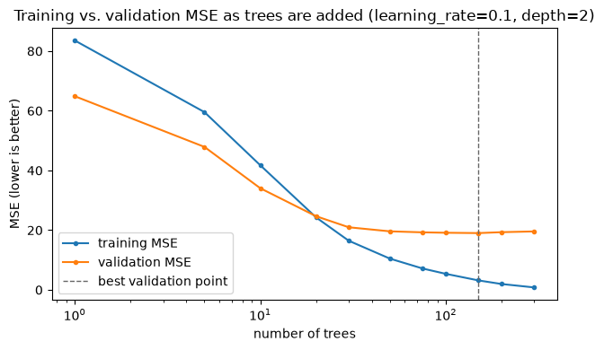
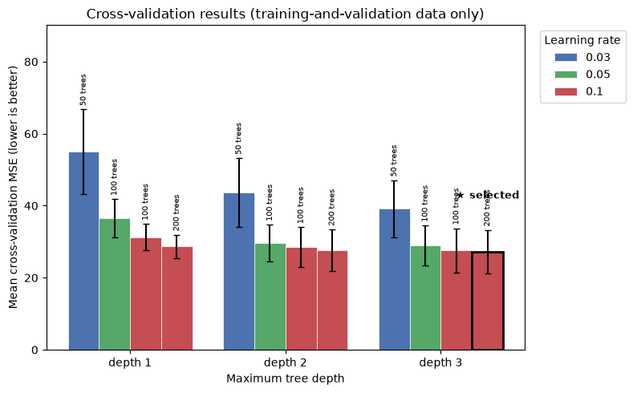

Exercise 7: Boosting and Gradient Boosting#
Run or download this notebook
This page is fully readable as it is, and the interactive activities work here in the browser. To run or change the Python code, use the portable version of the notebook:
View or download the portable
.ipynbfor VS Code or Jupyter
The portable notebook keeps every Python analysis cell and swaps each embedded activity for a link back to this page.
What this notebook covers#
This is Exercise 7 of Machine Learning for Neuroscience. Exercise 6 compared one tree with ensembles built by averaging many independently trained trees (bagging and Random Forest). Exercise 7 asks what happens when trees are instead built sequentially, with each new tree correcting errors left by the existing model – boosting.
In this notebook you will:
distinguish boosting from bagging;
follow residual correction tree by tree;
explore learning rate, number of trees, and tree depth;
choose settings using development data and evaluate a locked test set once;
compare a single tree, Random Forest, and gradient boosting.
Gradient boosting is not guaranteed to outperform Random Forest – both are strong tree-ensemble methods, and which one validates better depends on the task and dataset.
Prerequisites: Exercise 6 (regression trees, bagging, and Random Forest).
1. From Bagging to Boosting#
Method |
How trees are trained |
Combined prediction |
Main idea |
|---|---|---|---|
Single tree |
One tree |
One prediction |
Simple model |
Bagging |
Independently on resampled data |
Average |
Reduce variance |
Random Forest |
Independently with row and feature randomness |
Average |
Decorrelate trees |
Gradient boosting |
Sequentially to correct current errors |
Weighted sum |
Improve the model step by step |
A few key points:
bagging trees can be trained independently, and in any order – boosting trees cannot, because each one depends on the predictions of every tree fitted before it;
individual boosting trees are usually shallow (often just a few splits, or even a single split);
a long sequence of shallow trees can nonetheless combine into a complex, nonlinear model;
sequential correction also creates its own overfitting risk: nothing stops the sequence from eventually fitting noise specific to the training data.
Think first
Bagging averages many independently trained trees. Why does averaging not necessarily correct a bias every one of those trees shares?
What risk arises from adding corrective trees indefinitely?
data table: 1004 participants x 1446 columns
360 predictors
n_fit = 564 n_val = 189 n_train (development) = 753 n_test = 251 (locked; read once, in section 6)
2. Building a Model One Tree at a Time#
Squared-error gradient boosting builds its prediction \(\hat y\) in stages. The first stage predicts the training-target mean for every observation:
Before adding stage \(m\), the residual left by the current model is
A new shallow tree \(f_m\) is fitted to predict these residuals, and the model is updated by adding a learning-rate-scaled copy of that tree:
In plain language:
the first model predicts the training-target mean;
the next shallow tree predicts the current residuals – not the target itself;
the learning rate \(\eta\) controls how much of that correction is added at each step;
residuals are recalculated after every update, so the next tree always targets whatever error remains.
We will not derive this update in general; it is enough to know that, for squared error specifically, the negative gradient of the loss with respect to the current prediction is exactly the residual above – which is why this procedure is called gradient boosting.
Interactive Activity 1: Build a Boosted Model#
The activity below uses a small, simulated dataset – 24 observations on one continuous predictor, generated from a fixed formula and seed so the relationship is visible but noisy, not a clean curve. These are simulated values used to understand the algorithm, not ABIDE observations. Choose a learning rate, then step through the boosting stages: the top panel shows the observations and the current ensemble prediction; the middle panel shows the residuals left before this update and the shallow regression stump (a tree with a single split) fitted to them; the bottom panel tracks training MSE across every stage.
3. Gradient Boosting with Scikit-Learn#
Scikit-learn’s GradientBoostingRegressor implements the same procedure
directly:
gb_model = GradientBoostingRegressor(
n_estimators=100,
learning_rate=0.05,
max_depth=2,
random_state=42,
)
gb_model.fit(X_fit, y_fit)
predictions = gb_model.predict(X_val)
print(f"validation MSE = {mean_squared_error(y_val, predictions):.1f} "
f"validation R2 = {r2_score(y_val, predictions):.3f}")
validation MSE = 18.2 validation R2 = 0.747
Parameter |
Meaning |
Effect of increasing it |
|---|---|---|
|
Number of sequential trees |
More corrections and greater overfitting risk |
|
Contribution of each new tree |
Faster, less cautious updates |
|
Complexity of each tree |
More complex corrections |
|
Fraction of training rows per tree |
Adds randomness below 1 |
The first three matter most for this exercise. Like every tree-based model in this course, gradient boosting does not require feature scaling.
4. Learning Rate and Number of Trees#
n_estimators and learning_rate interact: a smaller learning rate makes
each individual correction more cautious, so it typically needs more trees
to reach a comparable fit. max_depth changes how complex each individual
correction can be.
Interactive Activity 2: Explore the Boosting Parameters#
This activity uses only the fixed 564-participant fitting subset and 189-participant validation subset from the training-and-validation data – the same split used above. The locked outer test set is never part of this activity, and lower training MSE does not automatically mean better validation performance. Choose a learning rate and a tree depth, then use the number-of-trees control – or press Play to add trees sequentially – and watch training/validation MSE, the learning-rate x tree-count heatmap, and the observed-versus-predicted plot update together.
5. Choosing When to Stop#
The curve below refits one configuration from the activity above (learning
rate 0.1, depth 2) across every tree count up to 300, using scikit-learn’s
staged_predict so only one model needs to be fit.

n_trees= 1 train MSE= 83.55 val MSE= 64.88
n_trees= 5 train MSE= 59.56 val MSE= 47.90
n_trees= 10 train MSE= 41.75 val MSE= 34.05
n_trees= 20 train MSE= 24.26 val MSE= 24.67
n_trees= 30 train MSE= 16.45 val MSE= 20.97
n_trees= 50 train MSE= 10.47 val MSE= 19.61
n_trees= 75 train MSE= 7.16 val MSE= 19.27
n_trees= 100 train MSE= 5.37 val MSE= 19.13
n_trees= 150 train MSE= 3.17 val MSE= 19.02 <- lowest validation MSE
n_trees= 200 train MSE= 1.96 val MSE= 19.33
n_trees= 300 train MSE= 0.81 val MSE= 19.58
Training MSE keeps falling as more trees are added – it reaches a small fraction of its starting value by 300 trees. Validation MSE instead falls quickly at first, flattens out, and then rises slightly: past that point, additional trees keep correcting residuals specific to the training participants rather than improving the underlying fit. This is the same underfitting-then-overfitting pattern Exercise 6 showed for tree depth – here it plays out across the number of boosting stages instead. Validation performance, not minimum training error, is what should guide how many trees to keep. This is the basic idea behind early stopping: monitoring validation error and halting once it stops improving, rather than always training the full requested number of trees.
Question: if 300 trees have lower training MSE but higher validation MSE than 120 trees, which model should be selected, and why?
6. A Complete Gradient-Boosting Pipeline#
We now apply Exercise 4’s validation logic, without reteaching it: preserve the locked test set, tune only on the training-and-validation data, and touch the test set exactly once.
preserve the locked test set;
run cross-validation only within the training-and-validation data;
compare a small parameter grid;
select one configuration by mean CV MSE;
refit it on all training-and-validation participants;
evaluate the locked test set exactly once.
The grid we intended to compare was:
parameter_grid = {
"learning_rate": [0.03, 0.05, 0.1],
"n_estimators": [50, 100, 200],
"max_depth": [1, 2, 3],
}
Computational cost is also part of model design. This full 27-candidate grid takes roughly ten times longer to cross-validate than most model runs in these practice notebooks, so here we evaluate a smaller 12-candidate grid instead. It still represents shallow and deeper trees, combined with low, medium, and high learning rates and numbers of trees. In your own work, define a manageable search before you evaluate any candidates, rather than removing settings after seeing their scores.
# Grouped bar graph: one group per max_depth, four bars per group (the
# fixed (learning_rate, n_estimators) pairs), colored by learning rate.
# Lower bars are better (lower cross-validation MSE). n_estimators is
# printed above each bar; the selected candidate is starred.
learning_rates = sorted({p[0] for p in lr_n_estimators_pairs})
bar_colors = {lr: c for lr, c in zip(learning_rates, ["#4c72b0", "#55a868", "#c44e52"])}
n_pairs = len(lr_n_estimators_pairs)
bar_width = 0.8 / n_pairs
group_centers = np.arange(len(depth_grid))
max_top = (cv_results_df["mean_cv_mse"] + cv_results_df["std_cv_mse"]).max()
fig, ax = plt.subplots(figsize=(8, 5))
seen_labels = set()
for pair_idx, (lr, n_est) in enumerate(lr_n_estimators_pairs):
offsets = group_centers - 0.4 + bar_width * (pair_idx + 0.5)
heights, errs, is_selected = [], [], []
for depth in depth_grid:
row = cv_results_df[
(cv_results_df["learning_rate"] == lr)
& (cv_results_df["n_estimators"] == n_est)
& (cv_results_df["max_depth"] == depth)
].iloc[0]
heights.append(row["mean_cv_mse"])
errs.append(row["std_cv_mse"])
is_selected.append(
lr == selected_params["learning_rate"]
and n_est == selected_params["n_estimators"]
and depth == selected_params["max_depth"]
)
label = f"{lr}" if lr not in seen_labels else None
seen_labels.add(lr)
bars = ax.bar(
offsets, heights, width=bar_width, yerr=errs, capsize=3,
color=bar_colors[lr], edgecolor="white", linewidth=0.5,
label=label,
)
for bar, height, err, selected in zip(bars, heights, errs, is_selected):
label_y = height + err
ax.annotate(
f"{n_est} trees", (bar.get_x() + bar.get_width() / 2, label_y),
textcoords="offset points", xytext=(0, 3), ha="center", va="bottom",
fontsize=7, rotation=90,
)
if selected:
bar.set_edgecolor("black")
bar.set_linewidth(2.0)
ax.annotate(
"\u2605 selected", (bar.get_x() + bar.get_width() / 2, label_y),
textcoords="offset points", xytext=(0, 26), ha="center", va="bottom",
fontsize=9, fontweight="bold", color="black",
)
ax.set_ylim(0, max_top * 1.35)
ax.set_xticks(group_centers, [f"depth {d}" for d in depth_grid])
ax.set_xlabel("Maximum tree depth")
ax.set_ylabel("Mean cross-validation MSE (lower is better)")
ax.set_title("Cross-validation results (training-and-validation data only)")
ax.legend(title="Learning rate", loc="upper left", bbox_to_anchor=(1.02, 1.0))
fig.tight_layout()
plt.show()
print(f"selected settings: {selected_params} (mean CV MSE = {best_row['mean_cv_mse']:.1f})")
print(f"locked-test MSE = {gb_test_mse:.1f} locked-test R2 = {gb_test_r2:.3f} (evaluated once)")

selected settings: {'learning_rate': 0.1, 'n_estimators': 200, 'max_depth': 3} (mean CV MSE = 27.2)
locked-test MSE = 32.4 locked-test R2 = 0.653 (evaluated once)
The selected configuration is the one with the lowest mean cross-validation MSE on training-and-validation data alone; the test set played no part in choosing it, and is read here for the first and only time in this notebook. The graph above shows every candidate’s cross-validation MSE; the starred bar is the one selected.
7. Comparing Tree-Based Models#
Finally, we compare a single regression tree, a Random Forest, and the selected gradient-boosting model above, all on the identical participant split (this notebook’s training-and-validation data and locked test set), the same 360 features, and the same target. The single tree and Random Forest use Exercise 6’s own complexity settings, carried forward unchanged rather than retuned for this comparison.
comparison_rows = [
{"Model": "Single tree", "Locked-test MSE": mean_squared_error(y_test, single_tree_pred),
"Locked-test R2": r2_score(y_test, single_tree_pred)},
{"Model": "Random Forest", "Locked-test MSE": mean_squared_error(y_test, random_forest_pred),
"Locked-test R2": r2_score(y_test, random_forest_pred)},
{"Model": "Gradient boosting", "Locked-test MSE": gb_test_mse, "Locked-test R2": gb_test_r2},
]
pd.DataFrame(comparison_rows).set_index("Model").round(3)
| Locked-test MSE | Locked-test R2 | |
|---|---|---|
| Model | ||
| Single tree | 70.132 | 0.249 |
| Random Forest | 38.199 | 0.591 |
| Gradient boosting | 32.368 | 0.653 |
On this cohort, this split, and these settings, gradient boosting achieves the lowest locked-test MSE of the three, followed by the Random Forest, with the single tree well behind both – a consistent held-out comparison, not proof that gradient boosting universally wins: a different task, cohort, or set of settings could easily favor the Random Forest instead.
Where does XGBoost fit?
XGBoost is an efficient, regularized implementation of gradient-boosted trees. It follows the same broad sequential-correction principle taught in this notebook, but adds computational optimizations and extra regularization terms that are especially useful for tabular data. Understanding ordinary gradient boosting, as covered here, is the right place to start before reaching for XGBoost.
A minimal example, for reference only – this notebook does not install,
import, or execute xgboost:
from xgboost import XGBRegressor
xgb_model = XGBRegressor(n_estimators=100, learning_rate=0.05, max_depth=2, random_state=42)
xgb_model.fit(X_fit, y_fit)
8. What Should We Remember?#
Boosting builds trees sequentially, unlike bagging and Random Forest, which build trees independently.
Each shallow tree corrects the residuals left by the current model.
The learning rate controls the size of each correction.
Learning rate and number of trees must be considered together: a smaller learning rate usually needs more trees.
Validation data, not training error, guides both when to stop adding trees and which settings to choose.
The test set is used exactly once, after every choice has already been fixed from development data alone.
Questions to take away#
How does boosting differ from bagging?
What does each new tree predict for squared-error gradient boosting?
Why does a smaller learning rate usually require more trees?
Why can training MSE improve while validation MSE becomes worse?
Why must the test set remain hidden while choosing the learning rate and number of trees?
Is XGBoost a completely different principle, or an extension of gradient boosting?